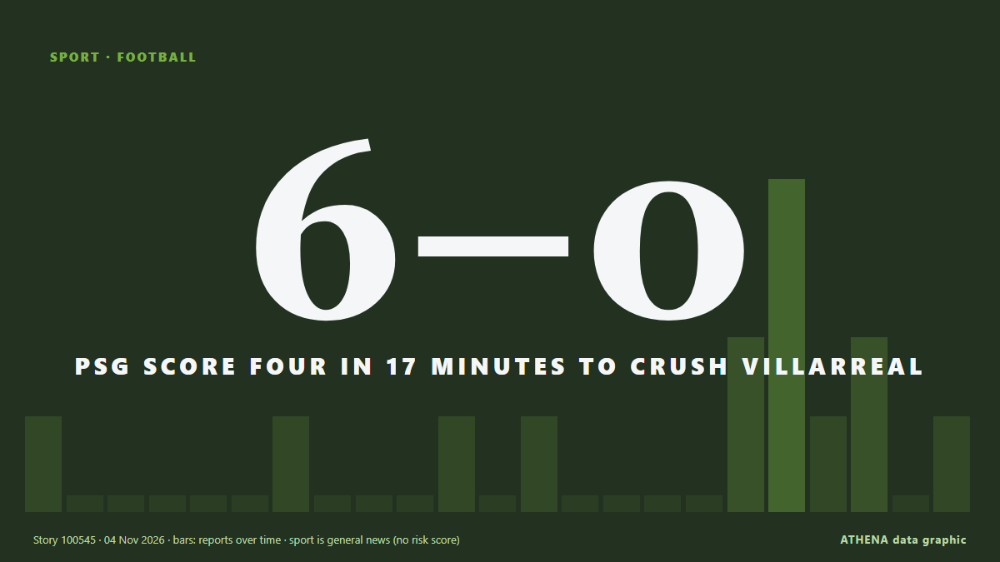

الرياضة
برعايةبرعاية  Cybernetics and Artificial Intelligence Lab Welcome to the Cybernetics and Artificial Intelligence Laboratory, established at the Department of Business Administration of the National and Kapodistrian University of Athens. The lab is headed by Professor Dimitrios Thomakos. The lab aims to do research that can be published in top venues. Our research uses tools and methods of Artificial Intelligence, and lies in the following areas: - Forecasting - Decision making - Cyber security - Finance We are always looking forward to collaborating with exceptional students!
Cybernetics and Artificial Intelligence Lab Welcome to the Cybernetics and Artificial Intelligence Laboratory, established at the Department of Business Administration of the National and Kapodistrian University of Athens. The lab is headed by Professor Dimitrios Thomakos. The lab aims to do research that can be published in top venues. Our research uses tools and methods of Artificial Intelligence, and lies in the following areas: - Forecasting - Decision making - Cyber security - Finance We are always looking forward to collaborating with exceptional students!
تُعرض العناوين بالإنجليزية كما نُشرت.

كرة القدمPSG score four in 17 minutes to crush Villarreal 6-0
VILLARREAL: Reigning champions Paris Saint-Germain scored four times in the first 17 minutes on their way to a 6-0 demolition of Villarreal in Spain in the Champions League on Tuesday, as the French… من New Straits Times
| 22 أكتوبر | 12 |
|---|---|
| 23 أكتوبر | 16 |
| 24 أكتوبر | 9 |
| 25 أكتوبر | 32 |
| 26 أكتوبر | 45 |
| 27 أكتوبر | 64 |
| 28 أكتوبر | 62 |
| 29 أكتوبر | 72 |
| 30 أكتوبر | 102 |
| 31 أكتوبر | 72 |
| 1 نوفمبر | 78 |
| 2 نوفمبر | 94 |
| 3 نوفمبر | 75 |
| 4 نوفمبر | 6 |
What Michael Carrick was thinking after Manchester United's Champions League comeback vs Roma
Man Utd produced a famous Champions League comeback to beat Roma 3-2 at Old Trafford on a night that could be a turning point for Michael Carrick. من Manchester Evening News
Canada to deny visas to Russian hockey players — PM Carney
The Court of Arbitration for Sport previously instructed the International Ice Hockey Federation to allow Russian national teams to take part in international competitions. من TASS (English)
Bayern skeleton crew sink Atletico in Champions League
MADRID: Bayern Munich overcame a horror list of absences to cruise to a 2-0 win away at Atletico Madrid in the Champions League on Tuesday. من Arab News
Djokovic battles through Paris Masters opener
The victory over Valentin Vacherot kept alive the Serbian 24-time Grand Slam champion's chances of landing a spot in the season-ending ATP Finals. من Free Malaysia Today
Haas move on from Esteban Ocon early
Ocon was dropped midway through the last round in Mexico, with the American team not offering an explanation as to why. من The Irish News (Belfast)
Asian Cup in Saudi Arabia to be postponed
Saudi Arabia, which will host the FIFA World Cup in 2034, will have an opportunity to use the 2027 Asian Cup as a dress rehearsal for the World Cup. من Sportstar
Barcelona 3-0 Aston Villa highlights and ratings after Champions League defeat
BirminghamLive brings you coverage of Aston Villa's Champions League clash against Barcelona. من Birmingham Mail
Djokovic faces ATP Finals battle after loss in Basel
Returning to Basel for the first time in 15 years, Novak Djokovic, lost 6-7(4), 7-5, 7-6(5) to German veteran Jan-Lennard Struff in Thursday’s second round, his first defeat in nine meetings. من Free Malaysia Today
FIFA visits Portugal as preparations for 2030 World Cup continue
A FIFA delegation is in Portugal this week to review preparations for the 2030 World Cup, which the country will co-host with Spain and Morocco. من The Portugal News
West Ham sack Nuno Espírito Santo as head coach
Rui Pedro Silva and Rui Barbosa follow Nuno out of the door. من Evening Standard (London)
20-year-old Antonelli becomes youngest Formula One world champion
Mexico City is up next in the F1 season and Kimi Antonelli is on the brink of being crowned the youngest world champion in the sport’s history. من The National
Funeral of Irish Olympian Ciara Mageean to take place later in Co Down
‘Devastated’ Lady Mary Peters leads condolences. من Belfast Telegraph
Nearly 8.4 million ticket requests received for India and Pakistan's 2027 World Cup clash
Nearly 8.4 million ticket applications have been received for India and Pakistan’s group-stage clash at next year’s Men’s Cricket World Cup, organisers said on Monday. من Business Recorder
Everton beat Newcastle 1-0 to pile pressure on Jaissle
Live updates as Matthias Jaissle's side look to bounce back from their Carabao Cup exit. من Chronicle Live (Newcastle)
Carrick brushes off questions over his future ahead of Roma clash
Manchester United head coach Michael Carrick has brushed aside questions about his long-term future, saying his focus remained firmly on Tuesday’s home Champions League clash with AS Roma as his side… من Cyprus Mail
Bayern are doing well despite rollercoaster week, Kane says
The German champions are without coach Vincent Kompany and several key players through injury ahead of their Champions League clash with Atletico Madrid. من Free Malaysia Today
Hamilton says Ferrari need 'serious talks' after costly Leclerc attack
(ANSA) - ROME, 02 NOV - Lewis Hamilton has said Ferrari need some clear-the-air discussions following an attack from his team mate Charles Leclerc that he said cost the team a one-two at Sunday's… من ANSA English
Glenn Maxwell announces retirement from international cricket
Maxwell, popularly known as 'The Big Show', represented Australia in 149 ODIs, 130 T20Is and seven Test matches. من Times of India
South Africa's Verreynne, Prince receive ICC reprimands
South Africa batting coach Ashwell Prince and wicketkeeper Kyle Verreynne have been reprimanded by the International Cricket Council for showing dissent towards the umpires on the third day of the… من Business Recorder
"Not the time for Russia to return" — Finnish politicians condemn sports court ruling
The Court of Arbitration for Sport (CAS) ruled last week that Russian teams can return to ice hockey’s international tournaments. من Yle News (alternative feed)
Gabby Williams leads Valkyries to WNBA championship in second season, beating Dream 68-63 in Game 7
SAN FRANCISCO: Gabby Williams scored her team’s final 11 points of the third quarter and dazzled through the fourth on the way to 30 points, and the Golden State Valkyries captured a championship in… من Arab News
Kane would swap Ballon d'Or for Champions League victory
Bayern Munich striker Harry Kane has beaten Barcelona youngster Lamine Yamal and Real Madrid forward Kylian Mbappé to emerge as the best player of the 2025-2026 season in Spanish newspaper Marca's… من Vanguard
Russia back in ice hockey world championships after sport court ruling
Court of Arbitration for Sport overturned IIHF decisions that excluded Russia from events in the 2026-27 season. من Al Jazeera English
Aston Villa make legal action decision after Jamie Carragher apology
Pundit had told Villa supporters to "shut the f*** up" من Evening Standard (London)
Senegal prepares to open 2026 Youth Olympic Games in Dakar
Senegal’s three-day general strike entered its second day on Thursday, with unions pressing the government to honour agreements on pay, pensions and working conditions amid a deepening economic… من RFI English
Kimi Antonelli youngest F1 champion
This breaks the previous record set by Germany’s Sebastian Vettel in 2010. من The Business Times
Real Madrid matches still banned in China despite Mbappe apology
"I've seen a lot of responsibility from a club which, at this level, is a club of great class, and as far as we're concerned, that's it, we've done our part, there's nothing more for us to do,"… من Vanguard
Canelo reclaims WBC title as Mexico falls 5-4 to The World in Riyadh boxing showdown
RIYADH: Mexican boxing star Saul “Canelo” Alvarez reclaimed the World Boxing Council Super Middleweight title after defeating France’s Christian Mbilli by unanimous decision in the final bout of… من Arab News
Arsenal win at Anfield for first time in 14 years to move top
Arsenal won at Anfield for the first time in 14 years after Kai Havertz's strike sealed a gritty 1-0 victory - but Liverpool were denied what looked to be a clear penalty. من Sky Sports
Almgren wins debut marathon in New York, Chepkirui wins women’s race
Sweden’s Andreas Almgren won the New York City Marathon, clocking 2hr 6min 1sec in a spectacular debut at the distance on Sunday. من The Namibian
Alcaraz beats De Minaur to win Vienna title
Carlos Alcaraz beat Alex de Minaur 6-1 6-4 to win the Vienna Open on Sunday, claiming his fourth title of the season and the 28th of his career, and extending his ATP 500 winning streak to 26 matches. من Cyprus Mail
Chinese state TV fails to air Real Madrid match after Mbappe row
Mbappe, Real and La Liga later all said sorry for his remarks, and China's foreign ministry said it took the player's apology "seriously". من CNA (Channel NewsAsia)
Ten Hag says relegation a real possibility for Man Utd
United sit 17th with seven points from nine games, above relegation-placed Crystal Palace on goal difference, and are winless in nine matches, their longest run without victory since 1984. من Free Malaysia Today
1 killed, 8 injured in shooting outside 'Magic City Classic' in Alabama
One person was killed and eight others were wounded in a mass shooting just outside Legion Field after the annual "Magic City Classic" football game, police in Birmingham, Alabama, said. من ESPN